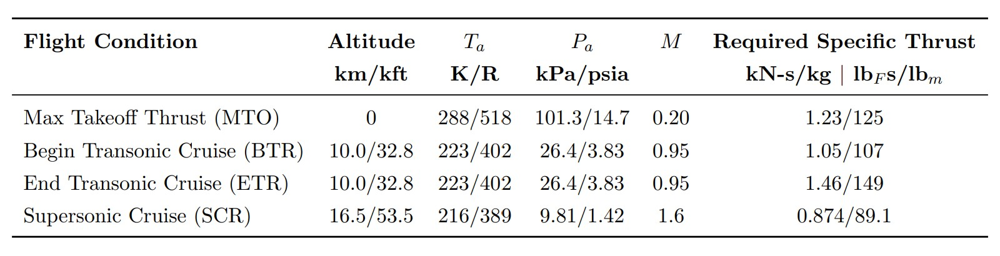
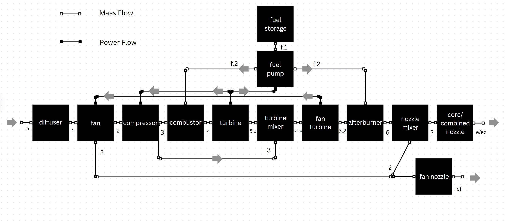

01 · Brief
Comparing engine architectures across a full flight envelope.
This project developed and evaluated turbine engine designs for four flight conditions: maximum takeoff thrust, beginning transonic cruise, end transonic cruise, and supersonic cruise. The corresponding Mach numbers were 0.20, 0.95, 0.95, and 1.6.
The analysis compared ramjet, turbojet, and turbofan style configurations by calculating bypass ratio, fan and compressor pressure ratios, bleed ratio, fuel ratios, stagnation states, nozzle velocities, specific thrust, TSFC, and efficiency.

02 · Problem
The best engine configuration changes as the aircraft accelerates.
A configuration that performs well at takeoff is not automatically the best choice for transonic or supersonic cruise. Bypass flow can help low-speed efficiency, but it becomes less useful as drag and high specific thrust requirements dominate the mission.
The project required matching required specific thrust at each flight condition, then judging which architecture was most useful for the overall mission rather than choosing the best point solution in isolation.
The final design had to balance thrust, fuel consumption, efficiency, and mission usefulness across the full operating envelope, not just at a single design point.
03 · Approach
Sweeping cycle parameters to match thrust requirements and compare architectures.
- Built a cycle-analysis workflow for inlet, fan, compressor, combustor, turbine, afterburner, and nozzle behavior.
- Evaluated turbofan, turbojet, and ramjet suitability across takeoff, transonic, and supersonic flight conditions.
- Varied design parameters including bypass ratio, fan pressure ratio, compressor pressure ratio, bleed ratio, fuel ratio, and afterburner fuel ratio.
- Calculated stagnation temperatures and pressures at component exits, nozzle exit velocities, power balance, specific thrust, TSFC, and efficiency.
- Optimized condition-specific designs against required specific thrust and maximum-thrust objectives.
- Selected an overall architecture by considering where the aircraft spends most of the mission and which configuration performs best there.

04 · Outputs
What the project produced.
- Condition-specific optimized engine configurations for takeoff, beginning transonic cruise, end transonic cruise, and supersonic cruise.
- A comparison showing turbofan behavior was better for the first two lower-speed conditions, while turbojet behavior was better for the later transonic and supersonic conditions.
- A conclusion that ramjet operation was not appropriate for the given Mach range.
- Performance tables for specific thrust, TSFC, efficiencies, fuel ratios, bypass ratio, and component stagnation states.
- A final recommendation favoring a turbojet as the best overall business jet engine architecture because most of the mission occurs at transonic and supersonic speeds.
05 · Takeaways
What I took away from the project.
This project made propulsion feel much more system-level. A pressure ratio, bypass ratio, or afterburner choice is not just a number in an equation. It changes fuel use, thrust, temperature limits, drag implications, and mission-level performance.
It also reinforced that optimization needs context. A point design can look strong at one condition, but the better engineering choice is the architecture that supports the overall mission profile.